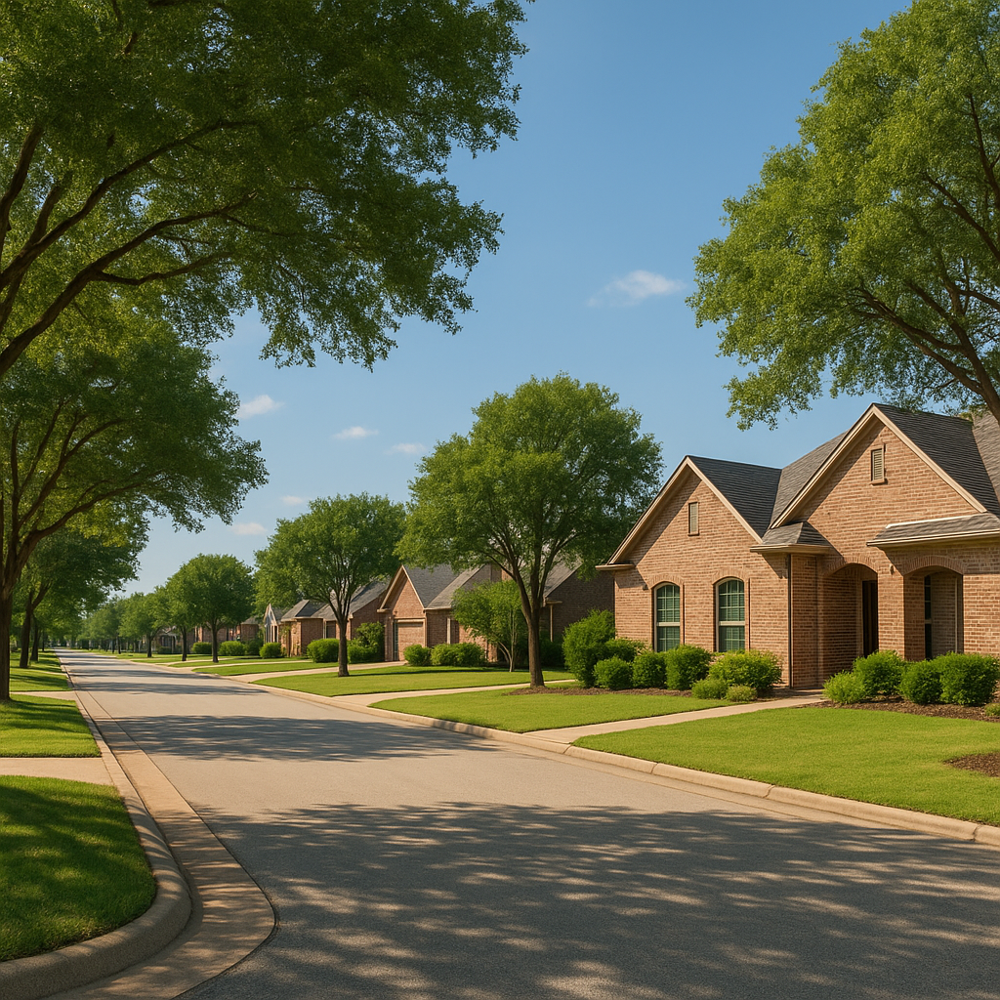

Effective October 1, 2026, the USDA Section 502 Direct Home Loan dropped to 5.750% — well below the current market rate of 7.39% for a conventional 30-year fixed. If you're a low or very low income buyer in a USDA-eligible DFW suburb like Forney, Royse City, or Terrell, that rate difference is worth understanding. But the Direct program is fundamentally different from the USDA Guaranteed loan that most buyers I work with use — and knowing which one you qualify for matters.
I'm Bond Peter Njoku (NMLS #2670329), a licensed mortgage loan officer based in Garland. I close USDA Guaranteed loans in Kaufman and Rockwall County regularly. The Direct program is administered by USDA directly — I'm not the lender for that product — but I can help you figure out which program you qualify for and how to navigate both.
What is the USDA Section 502 Direct Loan and how does it work?
The Section 502 Direct Loan is a government-to-borrower loan where USDA Rural Development acts as the lender. Unlike the Guaranteed program — where I originate your loan and USDA backs it with a guarantee — in the Direct program, USDA funds the loan itself through its Rural Development state office. That allows USDA to set the rate below what private lenders can offer.
As of October 1, 2026, the Direct rate is 5.750% for qualifying low-income and very low-income applicants. With payment assistance — a subsidy that USDA applies based on your income — that effective rate can drop as low as 1%. The program allows terms of up to 33 years for most borrowers and 38 years for very low-income applicants who need the extended term to afford the payment.
USDA Direct vs. USDA Guaranteed — which program fits you?
The two programs have significantly different income limits. The Direct program is for lower-income households; the Guaranteed program covers moderate-income households up to 115% of area median. Here is how they compare:
| Feature | USDA Section 502 Direct | USDA Section 502 Guaranteed |
|---|---|---|
| Who makes the loan | USDA Rural Development directly | Private lender (me) |
| Income limit | Up to ~80% of area median income | Up to 115% AMI — $139,300 (1–4 person, DFW metro) |
| Interest rate (Oct 2026) | 5.750% (before payment assistance) | Market rate (~7.39%) |
| Payment assistance | Yes — can reduce effective rate to 1% | No |
| Down payment | 0% | 0% |
| Loan term | 33 years (38 for very low income) | 30 years |
| Min credit score | 640 (no formal minimum, but USDA uses credit review) | 640 recommended (some lenders at 620) |
| Where to apply | USDA Rural Development state/county office | Through a private lender like me |
| Processing time | Typically longer — 60–90+ days | 30–50 days typical |
What are the income limits for USDA loans in DFW Texas 2026?
Income limits are the most confusing part of USDA, and there is an important distinction between the two programs — and between USDA limits and DPA program limits (which are frequently confused).
For the USDA Guaranteed program: the 2026 income limit for the Dallas metro area (which includes Kaufman, Rockwall, Ellis, and Dallas counties) is $139,300 for a household of 1–4 people and $183,900 for a household of 5–8 people. This is the higher "115% of AMI" figure — significantly higher than what most national blogs quote because DFW's median income is above the national floor.
For the USDA Direct program: the limit is approximately 80% of area median income. For most DFW-area counties, that comes to roughly $95,000–$105,000 for a family of four — but this figure must be confirmed with the local USDA Rural Development office, as it is adjusted more frequently. Do not rely on a lender blog for the exact Direct program limit; go to the USDA source.
Note that the $119,700 figure you may see in other posts refers to TSAHC/TDHCA down payment assistance programs for Collin/Denton/Rockwall counties — that is a DPA income limit, not a USDA limit. Do not confuse them.
How does the lower Direct rate affect monthly payments?
With the Direct rate at 5.750% versus a market guaranteed rate near 7.39%, the monthly payment difference on the same loan is significant:
| Loan Amount | Direct (5.75%, 33 yr) | Guaranteed (7.39%, 30 yr) | Monthly Savings |
|---|---|---|---|
| $250,000 | $1,482/mo P&I | $1,724/mo P&I | $242/mo |
| $280,000 | $1,660/mo P&I | $1,931/mo P&I | $271/mo |
| $310,000 | $1,838/mo P&I | $2,138/mo P&I | $300/mo |
With payment assistance, the Direct program borrower's effective rate could drop further, saving even more. However, this subsidy is recaptured if you sell the home or refinance — which is an important consideration that Guaranteed borrowers do not face.
Who actually qualifies for USDA Direct vs. Guaranteed in Forney, Royse City, and Terrell?
Last year I helped a buyer in Forney with a household income of about $118,000 and two kids. They were firmly in the Guaranteed program territory — above the Direct limit but well under the $139,300 Guaranteed limit. Their loan closed in 38 days with $0 down on a $285,000 home. Their payment including taxes and insurance came to about $2,080/month. That is the buyer profile I see most often in USDA-eligible East DFW corridors.
The Direct program tends to fit buyers earning closer to $70,000–$90,000 for a family of four in these counties — people who couldn't afford the market-rate Guaranteed payment but who genuinely need the subsidy. If that is your situation, the application process through the USDA RD office is more involved and takes longer, but the below-market rate can make the payment workable.
A buyer who tries to apply for Direct but is above the income limit will simply be referred to the Guaranteed program. And a buyer below the Direct income limit who applies for Guaranteed will qualify — they just won't get the subsidy. Running your actual income against both limits before deciding which path to pursue is the first step.
How do I apply for a USDA Direct Loan in Texas?
The Direct program application goes through the USDA Rural Development State Office or a local field office, not through a private lender. In Texas, Rural Development has offices in multiple cities. You'll complete a Form RD 410-4 (Uniform Residential Loan Application), provide income documentation, and go through USDA's own underwriting process.
Processing typically takes longer than a Guaranteed loan — allow 60–90+ days from application to closing, compared to 30–50 days for Guaranteed. If you are under contract on a home with a 30-day close, the Direct program will not work in time. Plan ahead.
For the Guaranteed program, which I originate: the process is the same as any other mortgage application. You apply through my office, I submit to an approved lender, and USDA issues the guarantee. Turnaround is 30–50 days in most cases.
Frequently Asked Questions
What is the USDA Section 502 Direct Loan interest rate in 2026?
I'm Bond Peter Njoku (NMLS #2670329) and effective October 1, 2026, the USDA Section 502 Direct Home Loan rate is 5.750% for low-income and very low-income borrowers. With payment assistance, that rate can be as low as 1%. This is a government-to-borrower loan — USDA funds it directly through the RD office, not through a private lender like me. Call or text me at 469-545-7180 and I can help you determine which USDA program fits your income level.
What is the difference between USDA Direct and USDA Guaranteed loans?
I'm Bond Peter Njoku (NMLS #2670329) and the core difference is who makes the loan and who qualifies. The Direct program is made by USDA itself, targets low and very low income households (roughly under 80% of area median income), and offers a below-market rate with payment assistance. The Guaranteed program is made by private lenders like me, targets households up to 115% of AMI ($139,300 for a family of 1–4 in the DFW metro), and uses 0% down at market rates. Most buyers in Forney, Royse City, and Terrell that I work with qualify for Guaranteed. Call or text me at 469-545-7180.
How do I qualify for a USDA Direct Loan in Texas?
I'm Bond Peter Njoku (NMLS #2670329) and USDA Direct eligibility requires: income at or below approximately 80% of area median income for your county; the property must be in a USDA-eligible area (Forney, Royse City, Terrell all qualify); you must occupy the home as your primary residence; and you cannot currently own adequate housing. Apply through the USDA Rural Development Texas State Office — not through a private lender. Call or text me at 469-545-7180 and I'll help you compare Direct vs Guaranteed before you choose a path.
Can I use USDA in Forney or Royse City Texas?
I'm Bond Peter Njoku (NMLS #2670329) and yes — Forney (75126) and Royse City (75189) are USDA-eligible as of 2026. I've closed USDA Guaranteed loans in both cities. The Guaranteed income limit for a household of 1–4 in Kaufman and Rockwall counties (part of the Dallas metro) is $139,300. If you're below that, you may qualify for $0 down. Call or text me at 469-545-7180 and I'll check the current eligibility map for your specific address and income.
Want to know if you qualify for USDA in East DFW?
I'm Bond Peter Njoku (NMLS #2670329). I work with buyers in Forney, Royse City, and Terrell regularly and can check your address and income against both the Direct and Guaranteed limits in minutes. Call or text me at 469-545-7180, message me on WhatsApp, or start your pre-approval online.